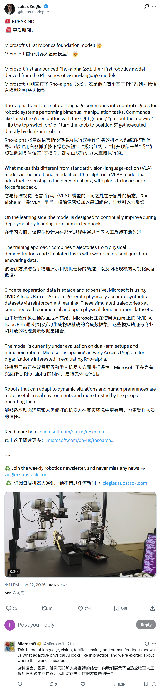
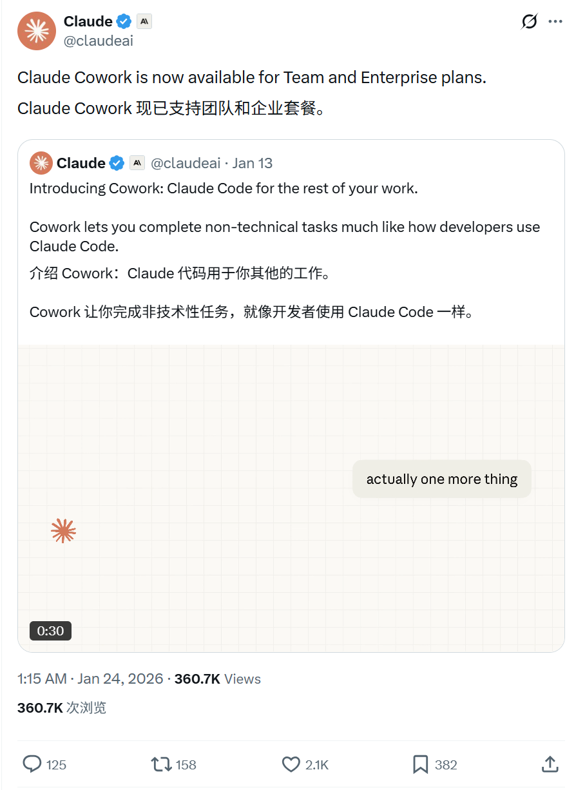
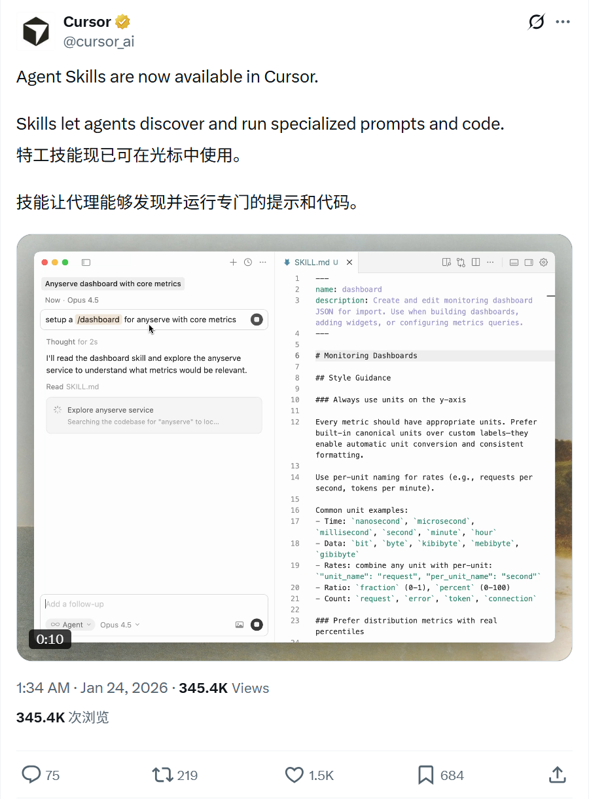
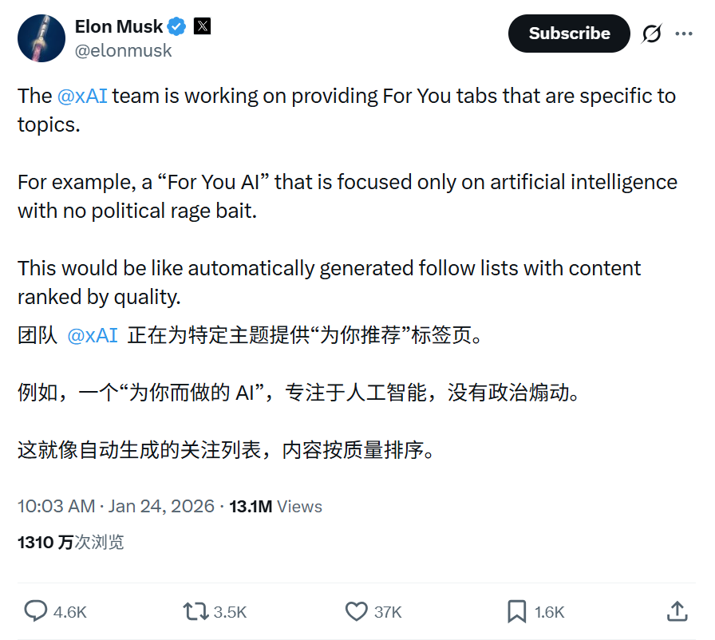
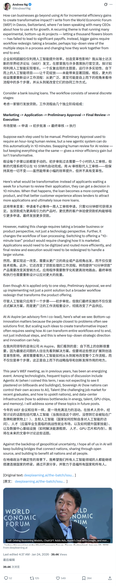
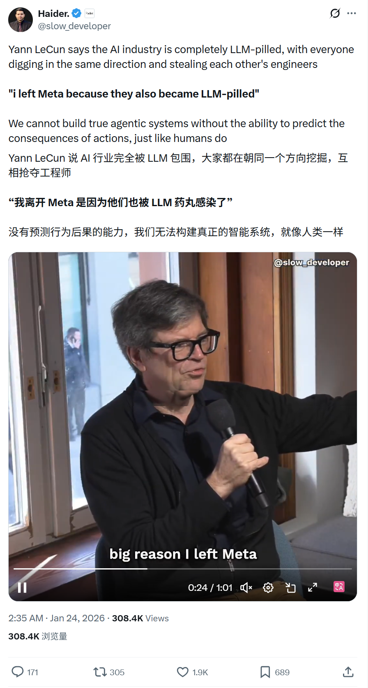

2026/01/24 硅谷AI圈动态
过去24小时，硅谷AI大佬在讨论什么
数据来源：X(twitter)平台实时推文
 小禾说AI (公众号)
清华小禾说AI (视频号)
小禾说AI (公众号)
清华小禾说AI (视频号)
📊 总览
过去24小时，相关账号整体节奏活跃，主要是新模型 (Microsoft Rho-alpha) 或新功能 (Claude、Cursor、xAI) 更新，学术界吴恩达和Yann LeCun也分别发表了对AI改变企业工作流程和AGI的观点。
| 主题 | 关键事件 |
|---|---|
| Microsoft | 发布机器人基础模型 Rho-alpha，展示自适应物理AI潜力 |
| Anthropic | Claude正式登陆Excel，Cowork功能面向团队版开放 |
| Cursor | 上线 Agent Skills，允许Agent执行自定义Prompt和代码 |
| xAI | 开发基于话题的"For You"标签页，过滤政治干扰 |
| 学术界观点 | 吴恩达探讨AI如何推动企业转型，LeCun驳斥AGI速成论 |
1
Microsoft - 机器人基础模型 Rho-alpha
🚀 核心内容
- 模型发布：推出了 Rho-alpha，展示了语言、视觉、触觉感知和人类反馈的融合。
- 物理AI：称此为"自适应物理AI (Adaptive Physical AI)"的实际应用，能够适应环境变化。
- 未来展望：微软对该技术在机器人领域的应用前景表示兴奋。
📸 原帖截图

2
Anthropic - Claude产品更新：Excel集成与Cowork
🚀 核心内容
- Excel集成：Claude现已在 Pro计划 中可用。支持拖拽多文件、避免覆盖现有单元格、并通过自动压缩处理更长的会话。
- Cowork更新：Claude Cowork 现已面向团队(Team)和企业(Enterprise)计划开放，进一步增强协作能力。
- 效率提升：旨在帮助用户更流畅地进行数据分析和团队合作。
📸 原帖截图

3
Cursor - Agent Skills 上线
🚀 核心内容
- 新功能：Agent Skills 现已在 Cursor 中上线。
- 能力扩展：Skills 允许 Agent 发现并运行 专门的Prompt和代码。
- 应用场景：这将增强 AI 在编程过程中的自主性和工具使用能力。
📸 原帖截图

4
xAI - 专注话题的"For You"标签页
🚀 核心内容
- 新功能开发：xAI团队正在开发特定主题的 For You tabs。
- 纯净体验：例如"For You AI"将只关注人工智能，没有政治引战内容 (no political rage bait)。
- 机制：类似于根据内容质量排名的自动生成关注列表。
📸 原帖截图

5
Andrew Ng - 企业如何利用AI实现变革性增长
🚀 核心内容
- 达沃斯观察：吴恩达在世界经济论坛(WEF)上撰文，分享与多位CEO的交流心得。
- 超越增效：探讨企业如何超越仅仅使用AI进行 增量效率提升 (incremental efficiency gains)。
- 吴恩达观点：认为企业若自上而下重塑工作流程、改变协同方式，会获得更大收益。
📸 原帖截图

6
Yann LeCun - 警惕"超人表现即AGI"的错觉
🚀 核心内容
- 驳斥观点：许多人误以为计算机在 单一任务 上表现出超人能力就是人类级AI (AGI) 的先兆，这是一种妄想。
- 历史教训：指出代码生成、数学、聊天机器人、围棋、杂技机器人等领域都曾出现过类似误解。
- 理性看待：强调特定领域的超人表现并不等同于通用的智能，不应混淆概念。
📸 原帖截图
